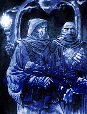

Forums galactiques > Taverne galactique : lieu de discussion informel > [RP Only] L'inévitable machine à café
Pages : 1 2 ... 6 7 8 ... 13 14
| La Cité des Vissäyan Réputation à la taverne : 171 12/07 ETU 21:44 | Score : 0 Détails "Etrangement ? C'est-à-dire ?..."
La curiosité revint, cela faisait des heures que Zao s'était calmé tout d'un coup... | ||
| Leorique Réputation à la taverne : 387 12/07 ETU 21:48 | Score : 0 Détails « Bah étrangement ... voilà tout ... je ne sais pas si c'est bien ou mal .. .qu'importe ... enfin ... »
Il hausses des épaules, regarde Zao avec air interrogateur et pensif. | ||
| La Cité des Vissäyan Réputation à la taverne : 171 12/07 ETU 21:51 | Score : 0 Détails 'M'ouais !... L'est étrange oui...' pensa alors le jeune homme. Puis bût la moitié de son gobelet, ajouta :
"Comment on peut s'attirer la sympathie... de... d'une femme..? J'ose pas poser ça à Nini, elle va me huer..." | ||
| Leorique Réputation à la taverne : 387 12/07 ETU 21:58 | Score : 0 Détails L'albinos le regarde un instant puis hausses des épaules. « Alors ça ... je suis bien la seule personne auxquels il ne faut pas demander ça ... je n'en ai aucune idée ... je suppose qu'il faut passer un peu de temps avec elle ... mais ne pas la coller ... lui montrer qui vous êtes en finesse ... lui offrir des cadeaux quand vous vous connaissez un peu ... » il hausses des épaules.
| ||
| La Cité des Vissäyan Réputation à la taverne : 171 12/07 ETU 22:14 | Score : 0 Détails "M'ouais... peut-être... merci vieux pour les conseils...
Je vais voir ça... Vous voulez un autre café ?" Et Zao finit son gobelet d'une traite. | ||
| Leorique Réputation à la taverne : 387 12/07 ETU 22:21 | Score : 0 Détails « Non ça ira ... je ne suis pas trop café ... plutôt thé ... et ça ira ... » il sourit légèrement. « Je la connais ... ? »
| ||
| freestyler Réputation à la taverne : 0 12/07 ETU 22:29 | Score : 0 Détails Le commandant freestyler, tout intimidé, rentra. Il jeta un coup d'oeil dans la salle où quelques personnes étaient assises, tous les regards se fixèrent sur lui:
"Bonjour à tous, je suis le commandant freestyler, je suis nouveau dans cet univers." Il alla s'assoir seul dans un coin. | ||
| Xavier Réputation à la taverne : 18  12/07 ETU 22:31 | Score : 0 Détails " Mon cher, l'amour vous emmenera loin, sur une route pleine de joie et de bonheur. Vous possédez bien plus que des qualités, votre coeur n'a pas besoin de s'ouvrir, il s'épanouie dans un monde ne correspondant pas au paradis, vous êts certainement un élu ! Profitez de la vie, profitez de votre jeunesse, aimez, vivez, offrez, ayez foi en Notre seigneur !
Quant à vous noble albinos, vous n'êts qu'un partisan inconscient, vous souffrez, vous êtes différent. Vous méprisez, juste à cause de mes choix religieux, aà causes de ma vocation, votre tolérence est à zéro, vous êtes curieux ! Le malin vous habite, il hante votre corps, un être tel que vous mériterait le buché ! Vous êtes damné !" Sur ses paroles, l'inquisiteur se leva prestement, lançant de l'eau bénite sur Leorique tout en récitant une incantation en latin. | ||
| Leorique Réputation à la taverne : 387 12/07 ETU 22:38 | Score : 0 Détails Il se lève rapidement en esquivant le jet d'eau. « Non mais ça va pas ! » L'albinos lui jette un regard glacial. « Je suis bien content d'être damné par un imbécile ... cela me rapproche plus des saints ... » Il ricane ironiquement. « Trêve de plaisanterie ... vous me refaite encore une foi ce coup la et je vous laisse imaginer ma réaction ... ».
D'un air glacial il observe avec dédain le fanatique. « Je vous méprise car vous n'êtes même pas capable d'avoir un esprit critique ... vous suivez ce qu'on vous dit comme un bon chien-chien ... il est écrit que ... et pas question de le changer c'est ça ... pfff ... quelle stupidité ... ». « Je suis Légion si ça vous chante ... croyez ce que vous voulez je m'en contrefiche ». | ||
| La Cité des Vissäyan Réputation à la taverne : 171 12/07 ETU 22:41 | Score : 0 Détails Zao avait maintenant la mine amusée et observa le 'spectacle' qu'il n'était pas prêt d'oublier. Il ricana même et à juste titre ! Ce n'était pas tous les jours qu'il voyait une telle... 'passion' ce fût le seul terme qu'il trouva.
Et décida malgré les bons mots de l'inquisiteur de suivre la suite des évenements... Sirota son café et se disait qu'il ne manquait plus que du popcorn... | ||
| freestyler Réputation à la taverne : 0 12/07 ETU 22:46 | Score : 0 Détails Le commandant freestyler fut étonné de voir de tel chose et entendre de tel méchanceté en si peu de temps.
J'ai l'impression qu'il y a un gros dilemme entre eux deux! Je sens que je ne vais pas m'ennuyer ici. | ||
| Xavier Réputation à la taverne : 18 12/07 ETU 22:48 | Score : 0 Détails " Fuis cette âme ô immonde démon ! Que la grâce divine s'abbatte sur ce corps blanc ! Laisse lui sa vie ou tu mourras par la main de Dieu !
Misérable créature, enemi de la paix, immondice vivant, pars et ne revient jamais !" Il prit de fioles de couleur violettes et les lança aux pieds de Leorique. Au contact du sol elles explosèrent, laissant partir une fumée mauve opaque, L'inquisiteur en profita pour sauter sur l'albinos en lui versant de l'eau bénite sur le front, puis il se mit à lui faire des signes de croix à l'aide de son pouce. "Dieu te pardonne tess pêché pauvre âme égaré, ta vie est achevée, il t'acceuile auprès de lui." Achevant ces paroles, il saisit une dague, et se mit à la bénir. | ||
| Leorique Réputation à la taverne : 387 12/07 ETU 22:55 | Score : 0 Détails 'Mais il est a enfermer celui la ... bon ... tant pis pour lui ...' . L'albinos se recule d'un pas en souriant, ses yeux se plisse et il se met en position de combat, l'air nullement inquiété ni par la dague ni par la fumé.
« Je crois que vous aurais prévenu ... ». il enleve tranquillement ses gants l'air prêt a frapper au moindre mouvement. « Vous continuez cette stupidité et vous aurez très mal ... donc je vous conseille tout de suite d'arrêter ... seuls les faibles ont recours a la violence et aux armes ... votre foi ne vous suffirait telle pas pauvre petit moinillon faiblard ? » | ||
| Hanabi Réputation à la taverne : 45  12/07 ETU 22:55 | Score : 0 Détails Hanabi arriva sur ces faits accablants. Elle fut amusée de voir Xavier à l'oeuvre avant de reconnaitre son adversaire. Elle parla d'une voix teintée d'une froide fureur.
"Xavier... Arrêtez cela sur l'instant. Et réfléchissez à deux fois avant de vous attaquez à quelqu'un !" Elle fit un effort sur elle même et se tourna vers Léorique. "Excusez le... C'est un jeune chien fou..." | ||
| La Cité des Vissäyan Réputation à la taverne : 171 12/07 ETU 23:00 | Score : 0 Détails Aie ça's gâte... Zao était sur le point d'intervenir.
Finalement, ça ne l'amusait plus... Un curé et un... il ne savait même pas qui était Leorique... La tension monta d'un cran. Faudrait pas qu'il y ait de morts, pensait-il. Même s'il ne l'avouait pas, il aurait été peiné de perdre ainsi deux personnes bien particulières. | ||
| Xavier Réputation à la taverne : 18 12/07 ETU 23:09 | Score : 0 Détails L'inquisiteur se releva et alla se caché par derrière la fumée. Il saisit son X-com. Tandis qu'il finissait de bénir sa dague, deux exorcistes vêtus de noir arrivèrent, ils regardèrent longuement Leoriques puis dirent au Suprême inquisiteur Xavier:
" Non, maître, vous avez fait erreur." Suite à ces mots ils aspirèrent la fumée, nettoyèrent les lieux, ramassèrent l'eau bénite et partirent lentement. Xavier, un peu vexé, pria quelques instants puis il se dirigea vers Leorique et lui dit: " Je suis désolé mon cher, la fatigue de ces derniers jours me pousse à l'extrême. Accordez moi le pardon je vous en prie." | ||
| Leorique Réputation à la taverne : 387 12/07 ETU 23:12 | Score : 0 Détails L'albinos hausses des épaules. «Ça ira si vous ne recommencez pas ... » il le regarde d'un air glacial. « Je vous excuse pour ceci ... mais pas pour le reste ... » Il hausses des épaules.
« Ha et ... reposez vous si vous êtes fatigué ... je n'apprecierais pas que vous m'aggressiez a nouveau ... servir Dieu ne vous empêche pas de dormir ... ? ha si pardon ... » Il ricane légèrement et hausses des épaules. son regard se tourne vers la jeune fille «Tiens ... hanabi ... que faite vous ici ... ?» | ||
| Xavier Réputation à la taverne : 18 12/07 ETU 23:15 | Score : 0 Détails " Cher homme, je vois avec regret que vous ne m'aimez pas ! Est une impression générale sur les serviteurs du seigneure ou envers ma personne ? Sachez que j'ai grand peine de constater celà.
Pour information, la nuit dernière nous avons chatié plusieurs sorcières au buché. Il est épprouvant de porter la damnation éternelle trois fois d'affilé." | ||
| Hanabi Réputation à la taverne : 45 12/07 ETU 23:22 | Score : 0 Détails Comme à son habitude, Hanabi juge Léorique.
"Je ne fais que passer... Et tout ce tumulte m'a intriguée... Il semble que j'arrive à point nommé... Comment allez vous, très cher ?" | ||
| Leorique Réputation à la taverne : 387 12/07 ETU 23:27 | Score : 0 Détails Il hausses des épaules. « après mettre fait agresser par un moine fou je dirais étrangement ... ça arrive pas tout les jours ... » il ricane légèrement.
« Sinon a part ça je vais étrangement ... je ne pourrais pas dire plus pour le moment ... enfin ... et vous ... ? ». il se tourne vers Xavier « je n'aime pas ceux qui suivent les règles sans fondement et sans les remettre en cause une seule fois ... je n'aime pas les religieux borné voilà tout ... » |
Pages : 1 2 ... 6 7 8 ... 13 14
Forums galactiques > Taverne galactique : lieu de discussion informel > [RP Only] L'inévitable machine à café